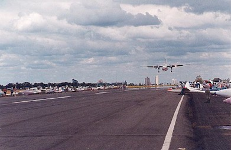

Campeonatos
|
Inicio
|
Nuestra Federación Argentina de Vuelo a Vela fiscaliza anualmente varios campeonatos regionales que generalmente se distribuyen zonalmente entre los clubes que se ofrecen como anfitriones (Sur, Norte y Centro). Además se efectúa un Campeonato Nacional, de donde surgen los pilotos que representarán en el campeonato mundial a nuestro país. Los campeonatos regionales duran una semana y el nacional entre 10 y 15 días. Durante los mismos se realizan temas deportivos (Vuelos de distancia), donde gana el piloto más veloz, o el que más kilómetros recorrió en el caso de que ninguno llegue a la meta. Además de la competencia deportiva, en estos campeonatos se participa de la camaradería de pilotos de todo el país y de otros países, y se transforman en verdaderas fiestas deportivas donde no solo disfrutan los competidores, sino también sus familias y sus ayudantes, razón por la cual muchos pilotos y su grupo familiar lo transforman en sus vacaciones. En la medida que Ud. vaya adquiriendo experiencia en la realización de vuelos de distancia, y obtenga la insignia "C" de Plata, podrá solicitar a la Comisión Directiva de nuestro Club la asignación de un planeador para participar en estas competencias representando a nuestra Institución. En la foto se observan los planeadores alineados a ambos costados de la pista en el Campeonato Nacional realizado en Santa Rosa de La Pampa:  |
|
|
|
||